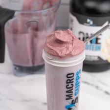

Protein Ice Cream

this recipe cured my binge eating.
thanks to xanthan gum, this ice cream has the exact texture of soft serve, and tastes almost like real ice cream.
the a filling effect it has on the stomach helps to quiet the urges to binge eat.
this recipe can be tailored to fit any flavor profile by adjusting the type of pudding, protein powder, and add-ins
ingredients
- 150g ice
- 33g protein powder
- 15g low fat pudding mix
- 90g almond milk
- 1/4 tesp xanthan gum
- optional: topping of choice, such as cocolate chips or cereal dust
- optional: cocoa powder, frozen fruit, cereal
instructions
- fill ninja blender with 150g ice, and pulse until consistency of snow
- blend in the protein powder + pudding mix + optional add-ins
- add in the almond milk, blend on high for 1.5-2 mins
- the ice cream can now be served in a giant bowl. the optional toppings can now be sprinkled on.
enjoy the gains